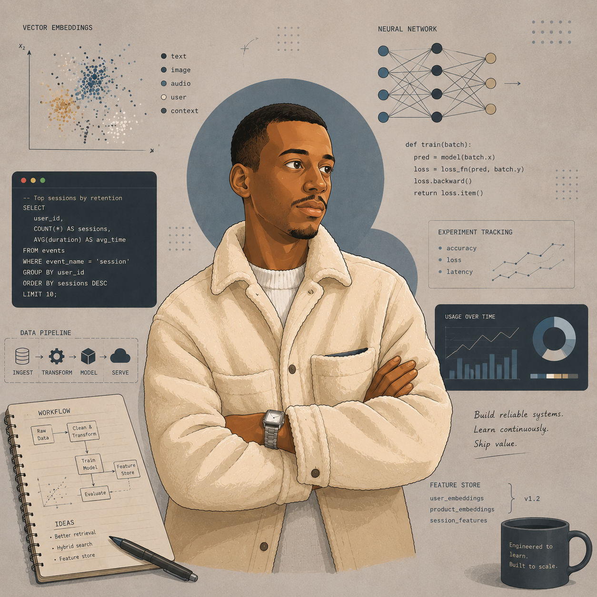

Machine Learning & Forecasting
XGBoost, ARIMA, SARIMA, LSTM, GRU and TCN applied to weather forecasting, with preprocessing pipelines, lag variables, rolling statistics and MAE/RMSE evaluation.
Big Data & Artificial Intelligence Engineering
Final-year engineering student focused on Machine Learning, RAG architectures, graph databases and cloud-based AI systems. I turn complex data into practical applications that can be tested, deployed and improved.

Expertise
XGBoost, ARIMA, SARIMA, LSTM, GRU and TCN applied to weather forecasting, with preprocessing pipelines, lag variables, rolling statistics and MAE/RMSE evaluation.
RAG system design with Gemini, CrewAI, Neo4j, Qdrant, FAISS and Elasticsearch to improve retrieval quality, reasoning and response accuracy.
Python, Streamlit, Flask, Firestore, Docker, Google Cloud Run, MongoDB, ETL pipelines and analytics workflows with Power BI.
Selected work
Weather AI - Forecasting - End-to-end ML
An end-to-end forecasting project built from raw weather station data: preprocessing, feature engineering, model comparison and 24-hour prediction workflows using classical ML and deep learning approaches.
AI Agents - Streamlit - Gemini
Conversational platform for diagnosis support, treatment recommendations, specialist referrals and appointment coordination through CrewAI agents.
Neo4j - Qdrant - PubMed - Gemini
Medical assistant combining graph databases, vector search and generative AI to produce contextual insights from natural-language symptoms.
Google Cloud Vision - Firestore - Docker
OCR application for digitizing handwritten prescriptions, matching medication names with Firestore and deploying the service on Google Cloud Run.
RAG - Jupyter Notebook
Exploration of agentic RAG pipelines focused on retrieval quality, tool orchestration and knowledge-enhanced AI applications.
Journey
International University of Rabat, Morocco.
Technical University of Sofia, Bulgaria.
Research and implementation of RAG architectures, vector search and production-oriented AI system design.
Compared XGBoost, ARIMA, SARIMA, LSTM, GRU and TCN models, evaluated with MAE/RMSE, and researched modern architectures such as GenCast and WeatherNext.
Technical toolkit
Contact
I am open to opportunities in AI Engineering, Machine Learning, RAG systems, Big Data and Cloud AI.